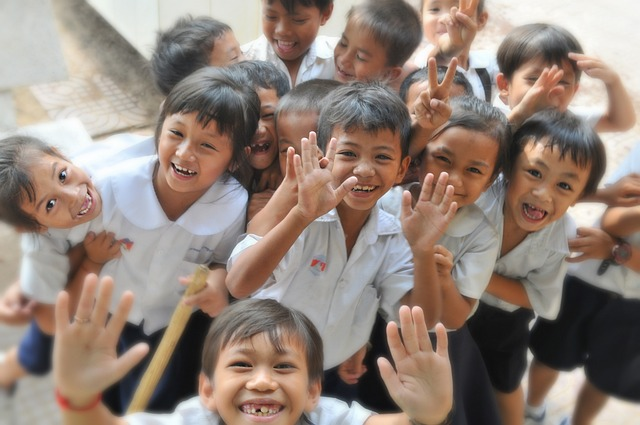

To conclude, the education system in India has a long way to go before it can be considered truly effective. However, many initiatives are being undertaken by the government and various other organisations to try and improve the situation. With time and effort, it is hoped that India will eventually have an educational system that meets the needs of all its citizens.
Informal education is provided outside the formal education system and does not follow any set curriculum. It includes training programs, workshops, and internships. Informal education can be beneficial for students who want to learn specific skills or knowledge that are not covered in the formal education system. It can also be helpful for students who want to gain work experience before entering the workforce.
